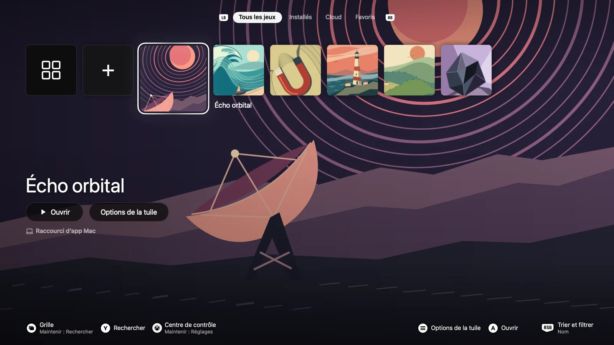
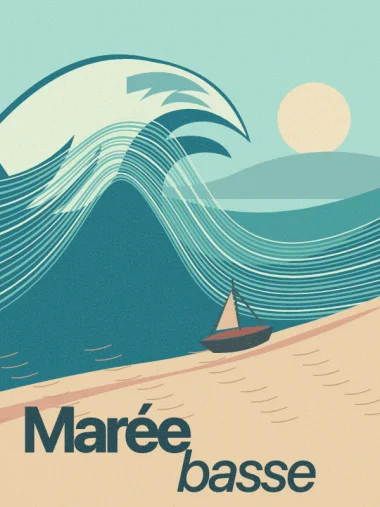

The library
The real app, with made-up games.

A game launcher. One library, for the controller, the keyboard or the mouse.
0.5.0-beta.3 · free, open source · macOS 26 · Apple silicon
Each card is a piece of Oort, to try right here. The first ones are in the beta.
Your whole library, one outline.
The real app, with made-up games.

Go up, go down, then press: the choice locks.
It glides from game to game. Tap, swipe or use the arrows.
A download fills the cover.

Your controller already drives this page.
Its buttons light up here, and it drives the whole page.
Press your controller or these keys. On the keyboard: A, B, X, Y and H.
Touch a seat to sit down.
Four voices, and the notes you want.
The chosen pack changes every sound on this page.
Pick a block, it plays through. Or draw the melody.
Nothing is kept without you.
Nothing is kept without you.
From 80 to 125%.
 Little lighthouse
Little lighthouseThe choice applies at once.
What leaves your Mac is yours to turn on.
Your keys never leave your Mac. Oort provides no games and no keys.
The whole page changes with you.
The farther from the Sun, the farther away. No date promised.
It all starts here: your games together, with a controller, the keyboard or the mouse.
The same Oort, with other engines to start your games.
Screens made for the thumb. The engine lives in each compiled game.
The same Google Drive as your Mac, from the phone. Optional, and unplugged whenever you like.
Plug in an engine or a store without changing Oort. Each also works without it.
At the very edge, where comets are born. Nothing is promised there.
One dot per change. The Sun is you, playing.
Easier to read, more yours
The controller is drawn in dots, labels become sentences and text reads over any picture.
It lights what you press, in Settings › Controllers, Controls and Players.
Increase Contrast and Reduce Transparency are followed.
Labels are no longer in capitals, in all seven languages.
The outline has a dark edge and the art darkens behind text.
Text at 4.5:1 and shapes at 3:1 everywhere.
Colors, spaces, radii and motion come from the same tokens.
Read as full, they refused mods and saves.
The steps stayed in English in other languages.
Install this DMG once: 0.3.0 cannot move to the new identity by itself. After that, updates are automatic again.
On first launch your library is copied and every file checked. The old one is not modified. Do not open both versions at the same time.
Sign in to your services and grant the macOS permissions once more. No game to recompile.
Automated tests pass. The controller changes with a real controller, a real game launch, a real Google Drive transfer and another Mac were not tried with this version. Keep a copy of what matters to you.
macOS 26 or later, Apple silicon. The app is not signed by Apple: the first time, use System Settings › Privacy & Security › Open Anyway.
Compose, place by place
Every place in the app can have its own sequence of notes, and a single outline glides from game to game.
Games, Ribbon, Players and Lists have their own sequence. The rest follow Everywhere.
First and last in options, details, search, mods, cheats, saves, themes and files.
The button, row or tile moves as it does under a click.
It glides from game to game on the home screen.
First-launch cards, detail links and dialogs.
Rows without a description are centered.
It no longer shows through “Add”.
Install this DMG once: 0.3.0 cannot move to the new identity by itself. After that, updates are automatic again.
On first launch your library is copied and every file checked. The old one is not modified. Do not open both versions at the same time.
Sign in to your services and grant the macOS permissions once more. No game to recompile.
Automated tests pass, but no real Google Drive transfer, no real game launch, no real controller on the new gestures and no other Mac were tried with this version. Keep a copy of what matters to you.
macOS 26 or later, Apple silicon. The app is not signed by Apple: the first time, use System Settings › Privacy & Security › Open Anyway.
The first, in its own home
The first public release of Oort NX from its own repository. It also carries everything prepared for 0.4.0, which was never published.
It lives behind the library, drawn by the graphics chip.
Oort, Pollen, Umbra and Impulsion, made by the app. Notes climb as you move.
From 80 to 125%.
Seats, controllers and who is playing.
Short Home, long Home, + and Y. The earlier layout stays available.
Optional, with your Google Drive.
A sidebar of subjects, a search, and a full page for each game.
All games, Installed, Cloud and Favorites.
Buttons, switches, sliders, panels and dialogs.
A held direction repeats, the right stick scrolls fast, L3 opens search.
Install this DMG once: 0.3.0 cannot move to the new identity by itself. After that, updates are automatic again.
On first launch your library is copied and every file checked. The old one is not modified. Do not open both versions at the same time.
Sign in to your services and grant the macOS permissions once more. No game to recompile.
Automated tests pass, but no real Google Drive transfer, no real game launch, no real controller on the new gestures and no other Mac were tried with this version. Keep a copy of what matters to you.
macOS 26 or later, Apple silicon. The app is not signed by Apple: the first time, use System Settings › Privacy & Security › Open Anyway.
Arcane becomes Oort NX
A name, a theme and a version number of its own. The base remains Arcane 0.2.1, by Bium23.
Dark by default if no theme was chosen, with two icons: Halftone or Particles.
Choose the display your games open on, for all of them or just one.
The reason and “Resume” stay visible after the alert.
The volume is named and the original copy kept.
A confirmation before an installed app is replaced.
The cloud panel no longer repeats a failure already shown.
Recompile Pokémon Legends: Z-A so that the + button goes straight to the game. Choosing the display also needs a game compiled with a compatible engine.
The 0.2.1 releases are in the original repository.
github.com/sofianbll/NxLibrarySubscribe (Atom feed)Choose your device. Five minutes.
0.5.0-beta.3 · November 25, 2026
macOS 26 or later · Apple silicon · 59 MB
The button gives you a DMG file. Open it.
Drop Oort NX into the Applications folder.
The first time, macOS refuses. That is expected, read below.
The app is not signed by Apple. Open System Settings, then Privacy & Security, scroll down and choose Open Anyway.
Only do this for a file downloaded here. If macOS says the app is damaged, download it again.
Compiling a Switch game also needs macOS 26.6 and Xcode 27.2, your own files and your own keys.
In preparation
Windows 11 · x64
The code is public, the file is not ready yet. It will appear here once it has really been opened.
In preparation
x64 · AppImage or .deb
The code is public, the file is not ready yet. It will appear here once it has really been opened.
In preparation
Android 10 or later
The code is public, the file is not ready yet. It will appear here once it has really been opened.
In preparation
iOS or iPadOS 26 or later
The code is public, the file is not ready yet. It will appear here once it has really been opened.